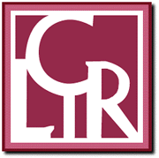

Digital Library Standards and Practices
The DLF will identify, document, organizationally endorse, and promote adoption of those standards and best practices that support the effective acquisition, interchange, persistence, and assessment of digital library collections and services. These pages open out onto work in this area.
Contents
1. Standards and best practices endorsed by
the DLF
2. Work in progress or under review
3. Other DLF work on standards and best
practices
1. Standards and best practices endorsed by the DLF
- Metadata Encoding and Transmission Standard (METS).
- During the past few years, the DLF has supported work on mechanisms for describing technical, structural, and administrative characteristics of digital objects. Initial recommendations about technical, structural, and administrative metadata emerged from the Making of America II initiative. In 2001, these were refined and extended by a DLF working group into a more inclusive "Metadata Encoding and Transmission Scheme" (METS). Work of the initiative is fully documented on a website that is being maintained by the Library of Congress at http://www.loc.gov/mets/. The site includes the METS schema (in XML), an overview and tutorial, and examples of METS applications. The planning document that framed the initial METS meeting and a report on that meeting are also available.
- Institute of Museums and Library Services (IMLS). Framework of Guidance for Building Good Digital Collections
- In spring/summer 2001, the DLF contributed to a forum convened by the Institute of Museum and Library Services (IMLS) to develop a framework for considering and promoting standards and good practices as may be adopted by the library community to guide the development of good (that is persistent and interoperable) digital collections. After review, the DLF has endorsed the framework in a statement that is available from http://www.diglib.org/standards/imlsframe.htm.
- Benchmarking digital reproductions of printed monographs and serials
- Libraries and others are digitizing increasing quantities of
printed material for online access without agreement on any
desirable level of imaging quality. The DLF has identified and
endorsed a specification that its members deem acceptable as the
minimum necessary for digitally reformatted monographs and
serials intended as faithful reproductions of the underlying
source materials. The benchmark focuses largely on format
specifications. It is also currently reviewing a specification of
the functions a digital master must minimally support, as a means
of providing guidance about what metadata must be associated with
it. Widespread adoption of the benchmark will help users and
libraries alike. Users will have more confidence in the fidelity
of digital reproductions that are available to them. And
libraries will produce and maintain reproductions with confidence
that expensive re-digitization will not become necessary. Digital
reproductions meeting at least the benchmarks' minimum
specifications will remain viable even as reproduction techniques
improved. Also, because such objects will have well-known,
consistent properties, they will support a wide variety of uses
(including uses not possible with printed texts). Additionally,
widespread adoption of the benchmark is an essential first step
for libraries that wish to investigate whether they can manage
and preserve print materials more effectively by relying more
heavily on digital reproductions for access.
The benchmark as endorsed by the DLF is available from http://www.diglib.org/standards/bmarkfin.htm. Draft recommendations about a digital master's required functions are also available. These recommendations are currently being reviewed by the DLF. A case for the benchmark's adoption is available in an article in RLG's DigiNews. A report on the meeting that initially defined the benchmark is also available from http://www.diglib.org/standards/presreformatsum.htm.
- The Liblicense model licensing agreement
- Resulting from a initiative funded by CLIR and DLF and led by Ann Okerson at Yale University, the license attempts to reach consensus on the basic terms of contracts to license digital information between university libraries and academic publishers. It benefits from the contributions of numerous college and university librarians, lawyers and other university officials responsible for licensing, as well as significant input from representatives of the academic publishing community. The Liblicense initiative also supplies valuable information resources for those involved in licensing information content from academic publishers including Liblicense software. Operating with Windows and NT, this freely available software systematically queries librarians (or producers) concerning the details of the information to be licensed and, based on that input, produces a draft license agreement. The draft license agreement can then be sent to information publishers (or customers) to serve as the basis for further negotiations for license agreements with acceptable terms.
- TEI text encoding in libraries
- These guidelines grew out of a workshop convened to explore the use of the Text Encoding Initiative (TEI) and XML in libraries. They make recommendations pertaining to the application of the TEI Guidelines and particularly "best practices" for the encoding of electronic texts developed for different purposes. The guidelines have been endorsed and are in use by leading text centers in the US and Europe.
2. Standards and best practices work in progress or under review
- Standards for electronic resource management
- Libraries (particularly academic libraries) are investing major portions of their acquisitions dollars in electronic information resources. As these electronic collections grow they are becoming increasingly difficult to manage and few existing library management systems provide tools to address contract management, umbrella subscriptions, and license terms. Some libraries are investing in local development of control databases, while others are waiting for vendor-supplied solutions. At this relatively early stage NISO and the DLF want to begin the process of developing a standard set of data definitions and common XML schema, encompassing names, definitions, and semantic relationships for elements related to identification, access and licensing of these resources. An initial workshop is being held on May 10, 2002 in Chicago. In addition, the DLF and NISO are supporting a study on standard format for exchanging serials subscription information.
- Guide to Good Practice: Cataloging Standards for Describing Cultural Objects and Images
- The DLF joins the Getty Grant Program in sponsoring the Visual Resources Association (VRA) to review and evaluate existing data content standards and current practice in order to compile a manual that may be used to describe, document, and catalog cultural objects and their visual surrogates. The guidelines will be available in 2003. The proposal describing the work is available here.
- Methods to evaluate the quality of images and imaging systems
- Building in part on work on imaging practices conducted Research Libraries Group (RLG), the DLF hosted a meeting to evaluate methods for evaluating the quality of images and image systems in order to determine whether common evaluation criteria might be developed to guide assessment in any domain. Both summary (PDF) and detailed (HTML) reports of the meeting are available.
- The Open Archives Initiative.
- The DLF is pleased to support the Open Archives Initiative (OAI) - an international initiative that is developing a technical framework for facilitating the efficient dissemination of content via the network. DLF support takes two forms. More information about the initiative, the DLF's involvement with it, and its potential significance for digital libraries is available by clicking from here.
- Z39.50
- Z39.50 is an international standard search and retrieval protocol that has been widely adopted by libraries as a means of integrating access to information maintained in distributed databases. Because the standard has become so important within the library community, the DLF in October 2000 appointed a representative to liaise with the ZIG, to attend its meetings, and to report on matters arising there. Reports are available for ZIG meetings held in December 2000.
3. Other DLF work on standards and best practices
- Guides to quality in visual resource imaging
- Five guides issued in July 2000 by the DLF and the Research Libraries Group (RLG) are designed to serve the growing community of museums, archives, and research libraries that are turning to digital conversion to provide greater access to their visual resources as well as to help preserve the original materials. The guides range from project planning to scanner selection, considerations for imaging systems, digital master quality, and masters' storage, and share the experience and knowledge of leaders in the field. In addition to providing advice based on the uses to which the images will be put and the technology now available, they also flag areas where further research and testing are needed.
- Archival authority control
- Report of a meeting involving an international group of archivists to develop a standard encoding format for the recording and exchange of archival authority information.
- The Making of America, part II. Structural metadata
- Structural Metadata. The project, led by UC Berkeley and including Cornell, NYPL, Penn State, and Stanford focused on special collections and the linkages between encoded finding aid descriptions of the collections and digitized versions of collection objects. In support of the planning phase of the project, DLF commissioned a white paper describing a method for capturing structural metadata for digitized materials in the context of a general service model for different genres of digitized archival materials. The project itself moved into an implementation phase with funding from NEH. It has produced a variety of tools to support the capture of administrative and structural metadata during the creation of digitized archival materials, the transmission of administrative and structural metadata regarding such materials, and the display of digitized materials to archive users.
- Making of America, part IV: The American voice, 1850-1870
- Although not a DLF project per se, MOA IV, conducted at the University of Michigan builds on previous DLF-sponsored efforts in this area. It establishes benchmarks and guidelines for the provision of online access to preservation-quality digital books. The effort uses the Making of America initiative as a foundation for validating, elaborating, and documenting methods employed by University of Michigan in the initial project. Those methods, combining sound, standards-based approaches with highly functional online retrieval mechanisms, have been demonstrated to be cost-effective and to meet a wide range of user needs.

Please send
comments or suggestions.
Last updated:
© 2002, Council on Library and Information
Resources
|  | CLIR Home
Page |